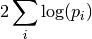
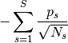
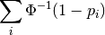
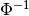
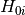
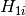
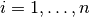
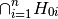
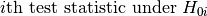

Nonparametric combination of tests¶
-
permute.npc.fisher(pvalues)[source]¶ Apply Fisher’s combining function

Parameters: pvalues (array_like) – Array of p-values to combine Returns: Fisher’s combined test statistic Return type: float
-
permute.npc.inverse_n_weight(pvalues, size)[source]¶ Compute the test statistic

Parameters: - pvalues (array_like) – Array of p-values to combine
- size (array_like) – The $i$th entry is the sample size used for the $i$th test
Returns: combined test statistic
Return type: float
-
permute.npc.liptak(pvalues)[source]¶ Apply Liptak’s combining function

where  is the inverse CDF of the standard normal distribution.
Parameters: pvalues (array_like) – Array of p-values to combine Returns: Liptak’s combined test statistic Return type: float
-
permute.npc.npc(pvalues, distr, combine='fisher', alternatives='greater')[source]¶ Combines p-values from individual partial test hypotheses  against ,  to test the global null hypothesis

against the alternative

using an omnibus test statistic.
Parameters: - pvalues (array_like) – Array of p-values to combine
- distr (array_like) – Array of dimension [B, n] where B is the number of permutations and n is the number of partial hypothesis tests. The $i$th column of distr contains the simulated null distribution of the .
- combine ({‘fisher’, ‘liptak’, ‘tippett’}) – The combining function to use. Default is “fisher” TODO: allow user to pass in their own combining function; check that it satifies the correct monotonicity. Describe the monotonicity!
- alternatives (array_like) – Optional, an array containing the alternatives for each partial test (‘greater’, ‘less’, ‘two-sided’) or a single alternative, if all tests have the same alternative hypothesis. Default is “greater”.
Returns: A single p-value for the global test
Return type: float
-
permute.npc.t2p(stat, distr, alternative='greater')[source]¶ Use the empirical distribution of a test statistic to compute its p-value.
Parameters: - stat (float) – Test statistic
- distr (array_like) – Empirical distribution of statistic
- alternative ({‘greater’, ‘less’, ‘two-sided’}) – The alternative hypothesis to test (default is ‘greater’)
Returns: the estimated p-vlaue
Return type: float